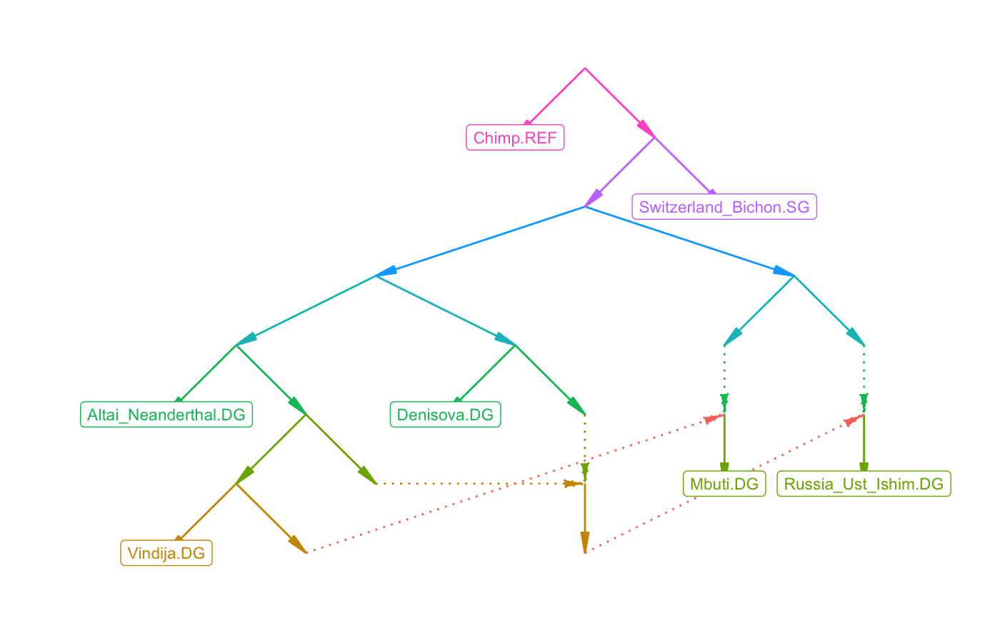
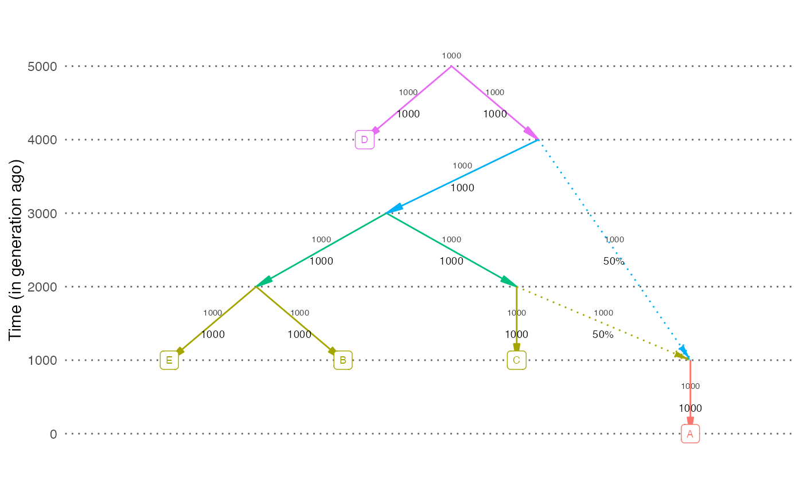

Plot an admixture graph
plot_graph(
graph,
fix = NULL,
title = "",
color = TRUE,
textsize = 2.5,
highlight_unidentifiable = FALSE,
pos = NULL,
dates = NULL,
neff = NULL,
scale_y = FALSE,
hide_weights = FALSE
)An admixture graph. If it's an edge list with a label column,
those values will be displayed on the edges
If TRUE, there will be an attempt to rearrange the nodes to minimize
the number of intersecting edges. This can take very long for large graphs.
By default this is only done for graphs with fewer than 10 leaves.
A plot title
Plot it in color or greyscale
Size of edge and node labels
Highlight unidentifiable edges in red. Can be slow for large graphs. See unidentifiable_edges.
An optional data frame with node coordinates (columns node, x, y)
An optional named vector with dates (in generations) for each node to plot dates on the y-axis (e.g., c('R'=1000, 'A'=0, 'B'=0)).
If this option is supplied, the y-axis will display dates in generations.
An optional named vector with effective population sizes for each population (e.g., c('R'=100, 'A'=100, 'B'=100)).
If this option is supplied, the effective population size of each population will be shown next to the corresponding edge.
If TRUE, scale the y-axis according to dates vector. The default is FALSE.
A boolean value specifying if the drift values on the edges will be hidden. The default is FALSE.
A ggplot object
plot_graph(example_graph)

# Plot a random simulation output. Show dates and population sizes on the plot
out = random_sim(nleaf=5, nadmix=1)
plot_graph(out$edges, dates=out$dates, neff=out$neff)
